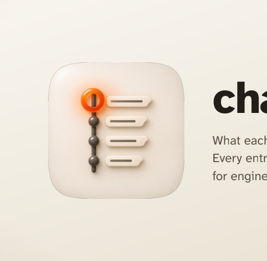

Every size a person actually meets this banner at, then the 12-point rubric. Delivery bar is 10 of 12 with checks 1, 2, 3, 7 and 12 non-negotiable. 5 of 5 mechanical checks pass and 7 still need a human verdict, which is what the renders above are for.

| # | Check | Verdict | Evidence |
|---|---|---|---|
| 1 | Exactly 3200x1040, from a 1600x520 layout at deviceScaleFactor 2 (non-negotiable) | pass | 3200x1040 |
| 2 | The plugin's real icon asset, referenced rather than redrawn (non-negotiable) | pass | 1 artwork reference inlined as a data URI, which is how a file:// render loads it at all |
| 3 | The wordmark is set in a linked web font, not a local system face (non-negotiable) | pass | loads Atkinson Hyperlegible Next |
| 4 | Ground register agrees with the icon it sits beside | — | judged by eye on the renders above; fill this in |
| 5 | One warm accent, carried from the icon's own accent constant | — | judged by eye on the renders above; fill this in |
| 6 | Composition derived from the icon's build script, not eyeballed from a sibling | — | judged by eye on the renders above; fill this in |
| 7 | One essence line, no em dash (non-negotiable) | pass | no em dash in the copy |
| 8 | Nothing overflows the frame | — | judged by eye on the renders above; fill this in |
| 9 | Wordmark and essence line both legible at 900px | — | judged by eye on the renders above; fill this in |
| 10 | Wordmark legible at 400px | — | judged by eye on the renders above; fill this in |
| 11 | No element illegibly overlapping another | — | judged by eye on the renders above; fill this in |
| 12 | banner-src retained, so the banner stays editable (non-negotiable) | pass | banner-src.html |
5 / 12
**Ships.**
The banner restates the icon's one move at bench scale. On the left is the real `icon.png`, inlined as a data URI: a graphite rail of closed beads with an open ember ring at the top. On the right is one changelog entry in miniature, with Task, Achieved and Remaining as three columns, which is how the page lays an entry out on a desktop screen. Only Remaining carries the ember, as a small ring. That is the icon's open ring stated as what it means on the page: the newest entry still has work to do.
Derived from `build_icon.py` rather than from a sibling banner. The ground is `GROUND_TOP` #F8F5EE to `GROUND_BOT` #E4DDCB with `VIGNETTE` #8A7A62 as the edge fall-off, the same 163° ramp the family uses. The entry card takes `CARD_HI` / `CARD_MID` / `CARD_LO` with `CARD_EDGE` #CFC4AE as its thickness, the column beads take the bead gradient (#8A8273 to #332E27), and the one ring is `EMBER` #DE5A28 with an `EMBER_HI` glow. The open column's label is `EMBER_DEEP` #BC3A14 so the word, not only the ring, carries the state.
The wordmark is Atkinson Hyperlegible Next at 800, linked from Google Fonts. It is the face the changelog page itself is set in, so the banner and the page it advertises match. `render_banner.py` measured its advance at 1.181 against the fallback control, so it loaded.
Legibility, read off `banner-renders/`: at 900px the wordmark, the essence line and the bench all read, including the column labels. At 400px the wordmark and the first line hold, the second line is small but legible, and the bench reduces to a card with three columns and one warm dot, which still says "an entry with something left". At 200px the essence line is texture.
Known liabilities. Atkinson Hyperlegible Next adds a face to a family the audit already found carrying twelve display faces across twenty-seven banners; matching the page was chosen over matching the set. The bench's text lines are placeholder bars rather than words, so the entry reads as a layout, not as content. The icon's cards have small tail notches that read faintly as speech bubbles at the banner's icon size, the same liability the icon audit records. Rows 4 to 6 and 8 to 11 of the sheet are one person's assessment, not a panel's.